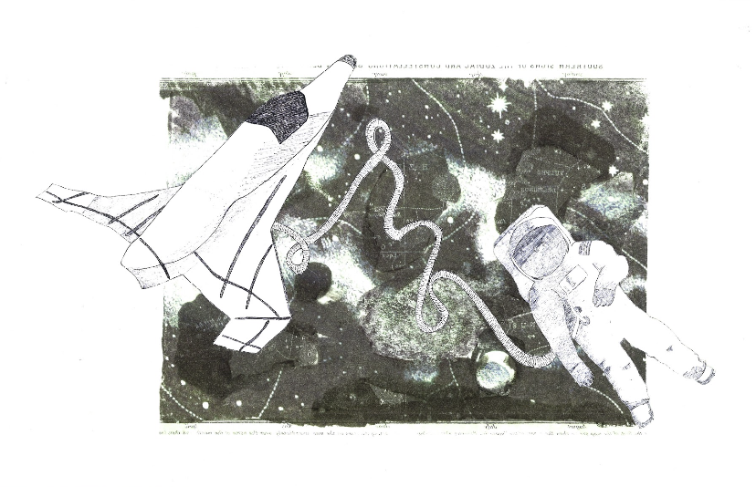
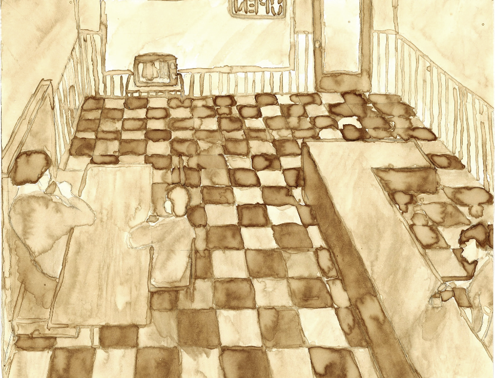
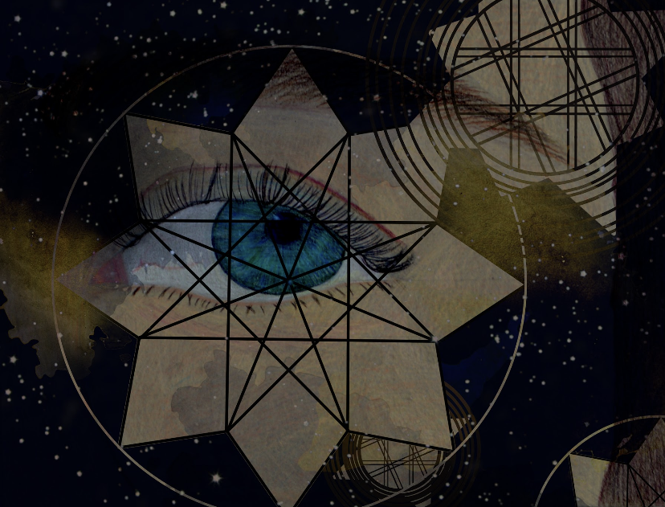
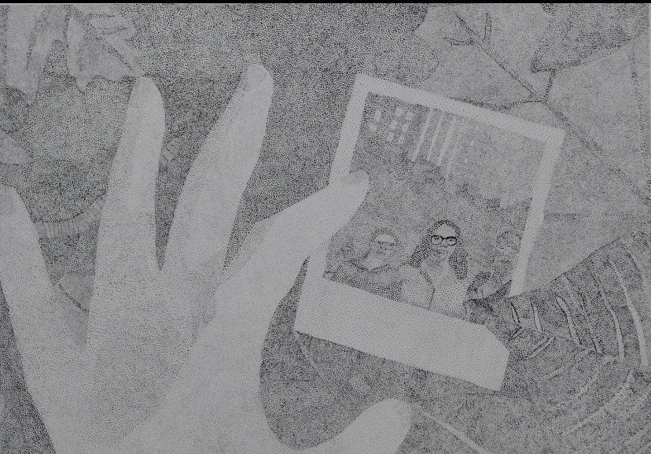
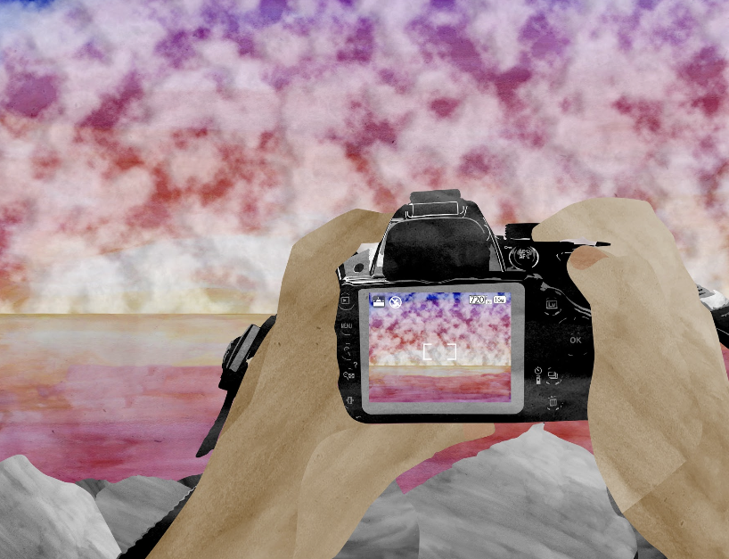
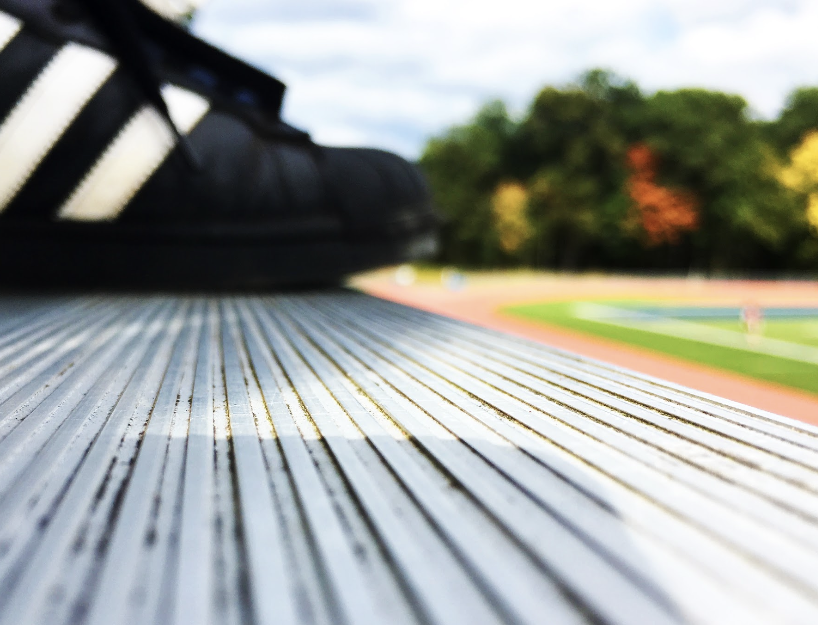
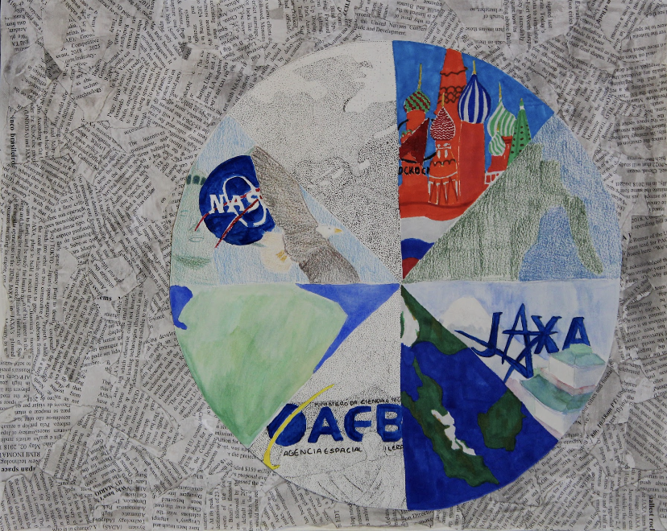
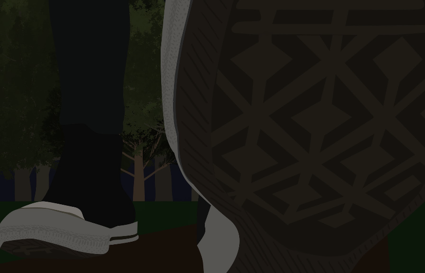

Liz "I got a 5 on the AP Art Exam" Murray
Throughout high school Liz was pretty into art (not so much now in college since she has less time), and here is some of her art from then

This was one of Liz's favorite pieces to work on in her AP art class her senior year. To make this she did an image transfer for the background, and used pen and paper that she had drawn originally on a smaller scale, reprinted to make the astronaut and the spaceship. One of her biggest challenges with this was to get the image transfer to look exactly how she wanted it, so she did multiple image transfers before ending up with this one.

This piece was something that Liz worked on during a snowstorm in her senior year when they lost power at home. She used coffee to paint a coffee shop scene. In order to make the coffee she used she boiled water and used espreso. When they got back to school and she continued to work on it there, her classmates hated how much the room smelled like coffee while she was working.

In case you haven't already figured it out 3 pieces in, this is another one from Liz's senior year art class. For this piece she used colored pencil to draw the eye in the background, and used photoshop to design the space like overlay. Initially, she wanted to do an image transfer of the space design onto the original copy of the eye, but ultimately decided against it, since she previously had issues with image transfer and would rather do a similar thing digitally where she had more control over how the final image looked.

Another piece from Liz's senior year, this piece was done entirely using micron pens and paper. Liz utilized several reference pictures, collaging them together to get the result that she wanted. This piece took her almost a month to make as she spent her time putting down thousands of dots and then stepping back to look at it from a distance to see if it was coming together how she wanted it to.

This is also from Liz's senior year, and originally it was just watercolor that she had done for herself and then she realized what a cool texture the water color had. The colors of the original watercolor gradient that she had reminded her of a sunrise or sunset over the ocean, so she took inspiration from that and scanned the water color into her computer, where she manipulated the scaned watercolor texture and used photoshop to set up the artwork you see today.

This was a photo that Liz took during her photography class in her senior year. The teacher had let the students lose on campus and told them to photograph whatever they wanted wherever they wanted. Liz and a friend found themselves in the bleachers, and noticed the fall color. Liz took this picture of her own shoe because she felt like it was a cool angle and showed some nice texture in the bleachers while also including a pop of color in the background from the fall leaves as well as the track and football field.

As part of her AP Art Portfolio, Liz had a concentration on space. So near the end of the year, with less than a week before the portfolio was due (so around early May), she was panicking because she was short a piece or two for her concentration. Somehow she ended up making this, which involved her printing out dozens of sheets of paper that contained articles about space for the background, and then also using a variety of mediums to create the globe and all of the space organizations shown.

This was another piece in her AP Art Portfolio but for the breadth, the part of the portfolio where the student is expected to show range in their skills. While helping take reference pictures for someone else, she somehow ended up on the floor and thought to herself, "This is a unique angle, I want to do something from this angle", and then took the reference picture of someone elses foot while still laying on the ground. When she submitted this piece as a quality piece, which was the 3rd section of the portfolio, she elevated her work by making this very 2-dimensional work 3-d, which took a decent chunk of time, however the final product was amazing.